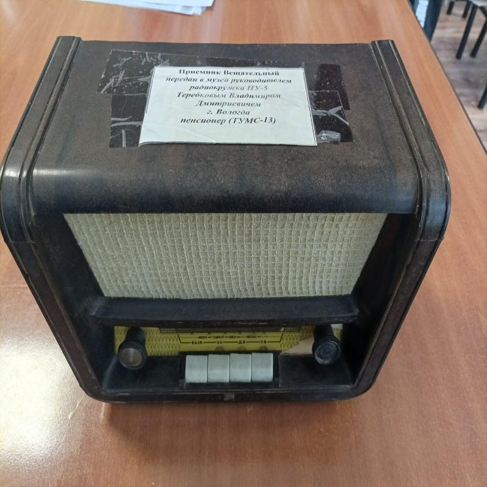
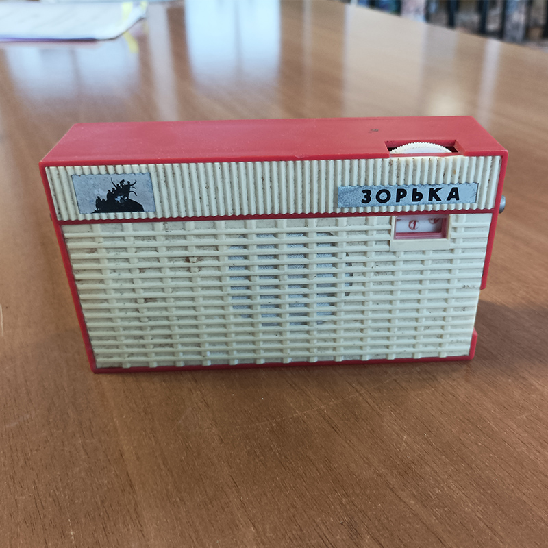
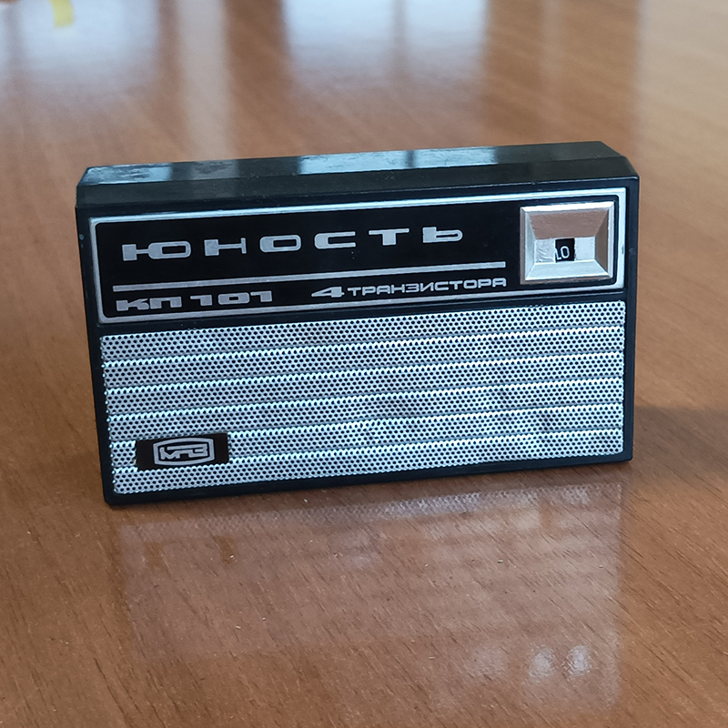
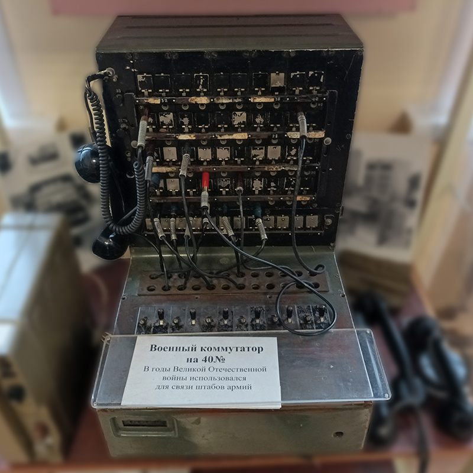
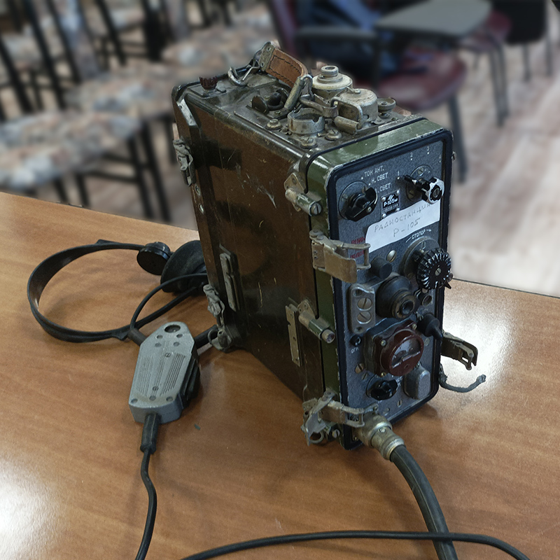
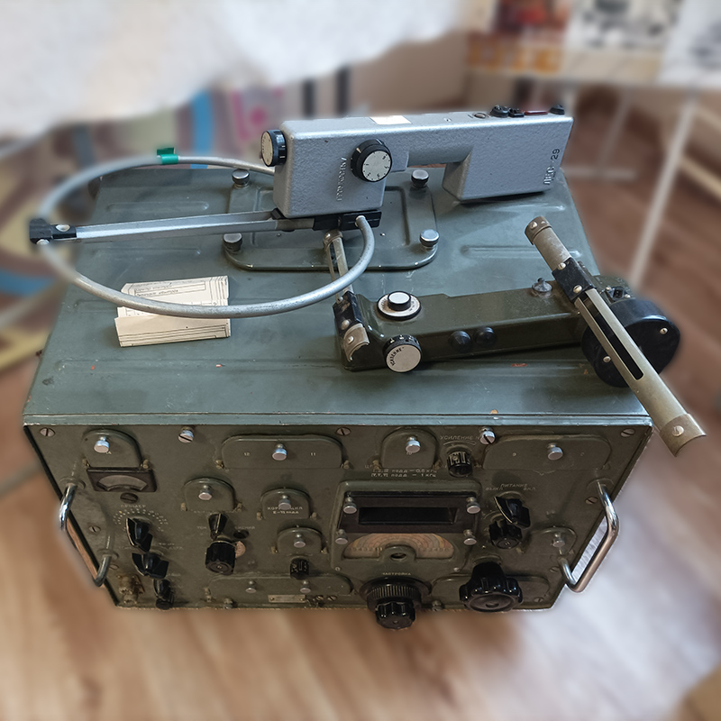

Приёмник Вещательный
Радиоприёмник, предназначенный для приёма программ звукового вещания и их акустического воспроизведения. Позволяет принимать передаваемые радиовещательными станциями амплитудно-модулированные сигналы в диапазонах длинных волн — 150—405 кгц (2000—740,7 м), средних волн — 525—1605 кгц (571,4—186,9 м) и коротких волн — 3,95—12,1 Мгц (75,9—24,8 м).
Радиоприёмник "Зорька"
Радиоприёмник "Зорька" создан на базе набора-конструктора и приёмника "СВЕРЧОК" и выпускался как собранным, так и радиоконструктором. Собранный на заводе радиоприёмник "Зорька" имеет схему прямого усиления сигнала. Работает на диапазонах от длинных волн до коротких.


Радиоприёмник "Юность"
Рефлексный радиоприёмник прямого усиления 2-V-3 для диапазона СВ (200—550 метров) на 4 германиевых транзисторах. Выпускался Первым московским приборостроительным заводом с середины 1960-х до начала 1990-х годов. Радиоконструктор «Юность» представлял собой корпус радиоприёмника, печатную плату, набор радиоэлементов, инструкцию по сборке.
Военный коммутатор П-194М
Полевой телефонный коммутатор ручного обслуживания средней ёмкости системы. Предназначен для обеспечения внутренней телефонной связи между абонентами на пульте управления, а также для связи по соединительным линиям. Коммутатор с индукторным вызовом и шнуровой коммутацией абонентов обладает ёмкостью на 40 номеров. Коммутатор П-194М рассчитан на включение 40 абонентских линий.


Радиостанция Р-105
Советская войсковая носимая ультракоротковолновая радиостанция. На вооружении с 1967 года. Предусмотрено дистанционное управление по кабелю длиной до 500 м и работа в качестве ретранслятора в радиосетях. Диапазон частот: 36,0-46,1 МГц
Военный радиоприемник Р-250М2
Советский коротковолновый радиоприёмник для дальней связи, радиоразведки и пеленгации, военного и гражданского назначения, выпускавшийся в различных вариантах с 1949 до 1980 г. Один из самых совершенных в своё время образцов аппаратуры такого класса. Широко применялся также радиолюбителями-коротковолновиками. Рабочий диапазон 1,5—25,5 МГц (200—11,75 м) разбит на 12 поддиапазонов шириной по 2 МГц.
